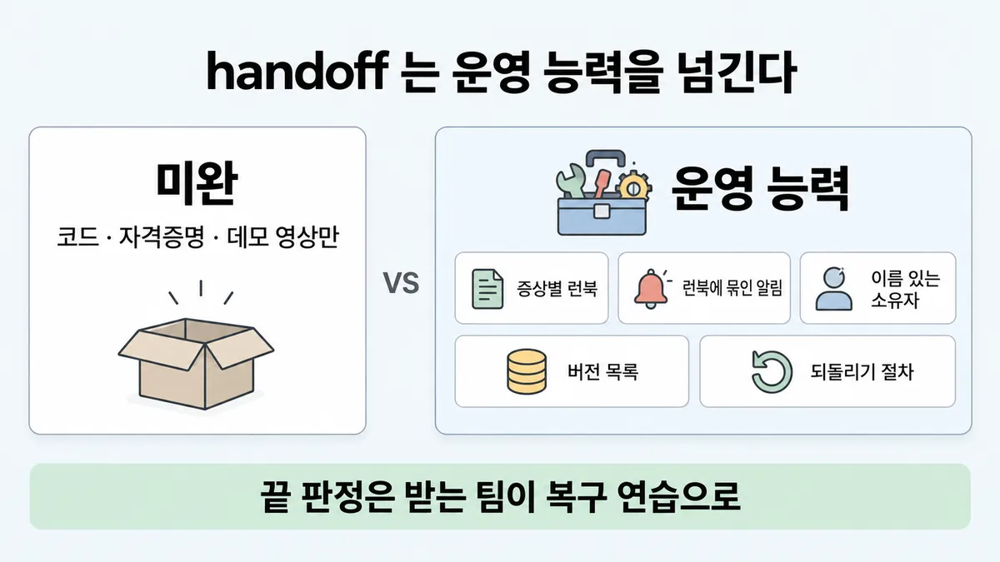
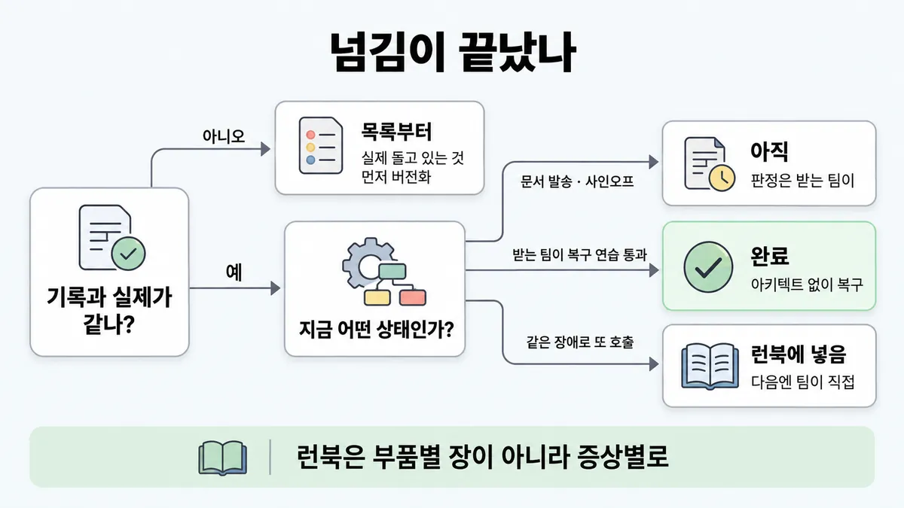

■ handoff 패키지
왜 배우나 — 시험이 요구하는 것
시험 목표 6.4 구조 문서화 · D6 사람·문서 14%Document architectures and provide implementation guidance
이 개념으로 푸는 판단 (할 수 있어야 하는 것)
- 6.5① 핸드오프가 끝났다 — 아키텍트가 계속 할 일 두 가지는? (복수 응답) — 수명주기 5단계(디스커버리·설계·핸드오프·모니터링·반복)는 되돌아오는 루프 — 핸드오프 뒤 할 일
한눈에
handoff(인계)가 넘기는 건 시스템이 아니라 운영 능력 — 증상별 런북 · 런북에 묶인 알림 · 이름 있는 소유자 · 버전 목록 · 되돌리기(rollback) 절차. "끝" 판정은 보낸 쪽이 아니라 받는 팀이 복구 연습으로 함 업계 일반 패키지 목록·완료 판정은 Anthropic 문서 없음
공식에서 가장 가까운 것 : eval 셋은 명확한 소유권이 있어야 쓸모 · 도메인 전문가·제품팀이 eval 을 직접 돌림 ✓ 확인 · 에이전트 시스템 = 프롬프트·도구·실행 로직이 얽힌 상태 덩어리 ✓ 확인 · 모델 ID = 고정 판 ✓ 확인 (좁은 문맥 — handoff 패키지로 넓힌 건 해석)
짓는 팀에게 주는 문서(인터페이스·도구 계약)는 ■ 구현 가이드, "왜" 는 ■ ADR·아키텍처 패키지, handoff 뒤 아키텍트가 계속 할 일은 ■ lifecycle 루프. 여기는 운영 팀에게 넘기는 묶음과 "넘김 완료" 판정
비유 운영 이관 체크리스트 — 알람마다 런북 링크 · 온콜 로테이션 · 배포 버전 표 · 롤백 버튼 · 게임데이(일부러 장애 내 보기) 통과. "위키에 다 올렸어요" 가 속이는 습관


ELI5
가게 주인이 이사 가면서 새 점장에게 가게를 넘기는 거예요.
- 열쇠만 주고 가면, 냉장고가 멈춘 밤에 새 점장은 무엇부터 할지 몰라요.
- 그래서 "냉장고 소리가 이상하면 → 이걸 보고 → 이렇게" 쪽지를 증상마다 붙여요.
- 쪽지마다 "안 되면 누구에게 전화" 도 적어요.
- 마지막으로 새 점장이 혼자 문을 열고, 일부러 꺼 둔 냉장고를 혼자 고쳐 봐요.
- 그게 되면 넘긴 거예요. 쪽지를 건넨 순간이 아니라요.
개념 설명
원리
넘기는 것 = 운영 능력 (업계 일반)
- 시스템(코드·자격증명)은 돌아가게 하는 재료일 뿐. 받는 팀이 새벽에 혼자 알아차리고 · 확인하고 · 고치고 · 되돌릴 수 있어야 넘긴 것.
- 그래서 묶음 = 증상별 런북 · 런북에 묶인 알림 · 이름 있는 소유자 · 결정 근거 · eval 셋 · 버전 목록 · 되돌리기 절차 · on-call.
- 공식 조각 : eval 셋은 살아 있는 산출물이라 명확한 소유권이 있어야 쓸모. 도메인 전문가·제품팀이 과제를 기여하고 직접 돌림 (demystifying-evals en 273·275줄).
왜 증상별인가 (업계 일반)
- 새벽 on-call 은 "주문 API 가 고장" 이 아니라 "고객에게 환불액 0원이 안내됨" 을 먼저 봄. 부품 이름은 원인을 찾은 뒤에야 알게 됨.
- 부품마다 장을 붙인 설명서는 "어느 장을 펼치지?" 에서 시간을 씀.
왜 받는 팀이 판정하나 (업계 일반)
- 보낸 쪽이 "다 적었다" 고 느끼는 것과, 받는 쪽이 혼자 해내는 것은 다름.
- 공식 조각 : 같은 명세를 읽은 엔지니어 둘이 엣지 케이스를 다르게 읽음 (demystifying-evals en 48줄) → 문서만으론 기대가 안 전해짐. 명세 문맥이라 handoff 로 넓힌 건 해석.
- 넘긴 뒤 같은 장애로 아키텍트가 또 불리면, 그게 지식이 안 넘어갔다는 신호.
왜 버전 목록인가
- 에이전트 시스템 = 프롬프트·도구·실행 로직이 얽힌 상태 덩어리 (multi-agent-research-system en 74줄) → 모델만 적으면 무엇이 돌고 있는지 모름.
- 모델 ID 는 고정 판 — 같은 ID 면 가중치·구성이 안 바뀜. 단 이 보장은 ID 에만, 4.6 이전 일부 모델의 alias 는 아님 (model-ids-and-versions en 1·63줄).
- 기록과 실제가 어긋났으면 모델 사용 감사(Console Usage → Export → API 키·모델별 CSV)로 아직 옛 모델을 쓰는 곳부터 찾음 (model-deprecations en 40~46줄).
핵심 질문 두 개
- 아키텍트가 연락이 안 되는 새벽에, on-call 이 이 묶음만으로 혼자 복구하나?
- 묶음에 적힌 판이 지금 실제로 돌고 있는 판과 같은가?
규칙과 판단


갈림길
①⑤ 무엇을 넘기나 [6.4]
미완
시스템이 아니라 운영 능력을 넘김 — 증상별 런북 · 알림 · 이름 있는 소유자 · 버전 목록 · 되돌리기 업계 일반
런북 · 흐름 그림
증상별 런북 · 흐름 그림 — 새벽 on-call 은 어느 부품이 문제인지 모른 채 증상에서 시작 업계 일반
통제 + 소유자 + 증거
의무마다 통제 · 소유자 · 지금 보여 줄 수 있는 증거. 보여 줄 수 없는 통제는 없는 통제 업계 일반
ADR
"왜" 는 → ■ ADR·아키텍처 패키지
② 런북 모양 [6.4]
증상별로 다시
새벽 on-call 은 어느 부품이 문제인지 모른 채 증상에서 시작 업계 일반
알림에 런북·소유자
알림마다 런북 링크와 이름 있는 소유자 업계 일반 → ■ feedback loop 책임 표
다음 물음 — 기록과 실제가 같나?
③④ 완료 판정 [6.4] [6.5①]
목록부터
실제 돌고 있는 것을 먼저 목록·버전화 — 런북·브리핑·되돌릴 판 결정은 그 뒤 업계 일반 · 모델 사용 감사 = API 키·모델별 CSV ✓ 확인 (모델 폐기 문맥 — 인벤토리로 넓힌 건 해석)
아직
완료 판정은 받는 팀이 — 워크스루 · 런북 따라 하기 · 일부러 심은 장애를 혼자 복구 업계 일반
완료
아키텍트 없이 복구 업계 일반 · 받는 팀이 eval 을 스스로 돌릴 수 있어야 넘김 (해석)
런북에 넣음
지식 이전 실패 → 그 경로를 런북에 넣고 다음엔 팀이 직접 업계 일반
흐름
그림 속 이름·금액·시간·토큰 수는 예시예요. 공식 한도·동작은 카드 본문 값이 기준.
장면 글로 보기
칸 : 아키텍트 → handoff 패키지 → 복구 연습 → on-call
규칙 (복구 연습) : 일부러 심은 장애를 on-call 이 혼자 복구
질문 : 이 묶음으로 새벽 장애를 혼자 풀 수 있을까?
① 증상별 런북 + 복구 연습 ✓
- 시작 : 아키텍트 — 쪽지 : 모델 ID / 프롬프트 v7 / 도구 4개
- 묶음 : 아키텍트 → handoff 패키지 : 증상별 런북 + 버전 목록 — 쪽지 : R-2 환불액 0원 / 확인: 주문 API / 되돌림: v6
- 연습 : handoff 패키지 → 복구 연습 : 일부러 심은 장애 — 쪽지 : 심은 장애: / 주문 API 끊김
- 복구 : 복구 연습 → on-call : 혼자 복구 — 쪽지 : R-2 대로 / 18분 복구 / 아키텍트 0회
- 끝 : 완료 판정은 받는 팀이 — 아키텍트 없이 복구
② 문서 발송으로 끝 ≠
- 시작 : 아키텍트 — 쪽지 : 코드 · 자격증명 / 데모 영상
- 묶음 : 아키텍트 → handoff 패키지 : 부품마다 트러블슈팅 장 — 쪽지 : 1장 주문 API / 2장 프롬프트 / 3장 검색
- 건너뜀 : 복구 연습
- 장애 : handoff 패키지 → on-call : 증상에서 시작 ≠ — 쪽지 : 03:10 / "환불액 0원" / 몇 장을 보지?
- 호출 : on-call → 아키텍트 : 같은 장애로 또 호출 — 말 : “또 전화드려요.”
- 끝 : 같은 장애로 아키텍트가 또 호출되면 지식 이전 실패
③ 기록과 실제가 다름 → 목록부터 ✓
- 시작 : 아키텍트 — 쪽지 : 문서: v3 / 실제: 기록 없는 / 수정 11번
- 목록 : 아키텍트 → handoff 패키지 : 실제 돌고 있는 것부터 — 쪽지 : Usage → Export / 키·모델별 CSV / 옛 모델 1곳
- 버전화 : handoff 패키지 : 버전 목록부터 — 쪽지 : 프롬프트 v14 / = 지금 운영판
- 끝 : 실제 돌고 있는 것을 먼저 목록·버전화 — 런북은 그 뒤
규칙 원문 ①②③④⑤ (갈림길로 그린 규칙)
-
넘기는 것 = 운영 능력 : 증상별 런북 · 런북에 묶인 알림 · 이름 있는 소유자 · 결정 근거 · eval 셋 · 버전 목록 · 되돌리기 절차 · on-call 업계 일반 목록은 공식 문서 없음 [6.4]
코드 + 자격증명 · 데모 영상 + 슬라이드 · 빌드 채팅 로그 · 소유자 없는 런북 초안만으로는 미완 업계 일반
팀이 여럿이면 서비스 전체를 책임지는 소유자 한 명 + 같이 보는 지표 + 심각도·에스컬레이션 규칙. 부품별 소유권만으로는 장애가 길어짐 업계 일반
eval 셋 : 살아 있는 산출물 · 명확한 소유권이 있어야 쓸모 · 전담 팀이 인프라, 도메인 전문가·제품팀이 과제를 기여하고 직접 돌림 ✓ 확인 → 누가 맡나는 ■ lifecycle 루프 · 규칙 ④
버전 목록 : 에이전트 시스템 = 프롬프트·도구·실행 로직이 얽힌 상태 덩어리 ✓ 확인 → 모델만이 아니라 프롬프트 판 · 도구 정의 · 데이터·정책 판도 적음 (넓힌 건 해석)
모델은 ID 로 : 모델 ID = 고정 판, 같은 ID 면 가중치·구성이 안 바뀜 · 이 보장은 ID 에만, 4.6 이전 일부 모델의 alias 는 아님 ✓ 확인 · ID 마다 지원 중단·종료 일정 ✓ 확인 → ■ lifecycle 루프 · 규칙 ⑤
되돌리기 : 알려진 좋은 판(프롬프트·모델 ID)으로 돌아가는 절차와 누가 실행하나 업계 일반 · 옛 판·새 판을 함께 돌리며 트래픽을 조금씩 옮기는 배포 → ■ 에이전트 상태·실패·배포
-
런북은 증상별 : 컴포넌트별 장이 아니라 보이는 증상마다 한 줄 = 증상 → 확인할 것 → 조치 → 안 풀리면 누구 업계 일반 공식 문서에 런북 없음 [6.4]
새벽 on-call 은 어느 부품이 문제인지 모른 채 증상에서 시작 → 부품마다 붙인 트러블슈팅 장은 복구 시간을 못 맞춤 업계 일반
알림마다 런북 링크와 이름 있는 소유자 업계 일반 — 알림 한 행의 구조(신호 → 트리거 → 소유자 → 행동)는 ■ feedback loop 책임 표 · 무엇부터 볼지는 ■ observability 세 신호
짓는 팀용 런북 한 줄(알아보는 법 · 확인할 것 · 복구 방법)은 ■ 구현 가이드 · 규칙 ⑤ — 여기는 그것을 증상 기준으로 운영 팀에 넘기는 모양
-
완료 판정은 받는 팀이 : 문서 발송 · 아키텍트 사인오프 · "나중에 읽어 볼게요" 는 완료가 아님. 워크스루 + 런북 따라 하기 + 일부러 심은 장애를 on-call 이 혼자 복구 = 완료 업계 일반 [6.4] [6.5①]
합격 기준 = 아키텍트 없이 복구 업계 일반 ■ 구현 가이드 의 "아키텍트 없이 빌드·복구" 와 같은 기준
공식 조각 : 같은 명세를 읽은 엔지니어 둘이 엣지 케이스를 다르게 읽음 → 문서만으론 기대가 안 전해짐 ✓ 확인 (명세 문맥 — handoff 로 넓힌 건 해석) · 도메인 전문가·제품팀이 eval 을 직접 돌림 ✓ 확인 → 받는 팀이 eval 을 스스로 돌릴 수 있어야 넘김
넘긴 뒤 같은 장애로 아키텍트가 또 호출되면 지식 이전 실패 → 그 경로를 런북에 넣고 다음엔 팀이 직접. 아키텍트가 더 빨리 고치는 스크립트를 짜 주면 의존이 굳음 업계 일반
반대 쪽 : 받는 팀이 혼자 복구한다 ≠ 아키텍트가 모니터링·반복에서 빠짐 → ■ lifecycle 루프 · 규칙 ②
-
기록과 실제가 어긋났으면 목록부터 : 기록 없는 프롬프트 수정이 쌓였으면 실제 돌고 있는 것(모델 ID · 프롬프트 판 · 도구)을 먼저 목록·버전화하고, 런북·브리핑·되돌릴 판 결정은 그 뒤 업계 일반 [6.4]
공식 조각 : 모델 사용 감사 = Console Usage → Export → API 키·모델별 CSV 로 아직 옛 모델을 쓰는 곳을 찾음 ✓ 확인 (모델 폐기 문맥 — 인벤토리로 넓힌 건 해석)
문서도 낡음 : CLAUDE.md 는 주기적으로 검토해 낡거나 충돌하는 지시를 뺌 ✓ 확인 (Claude 가 읽는 문서 기준) → 런북에도 갱신 소유자와 갱신 계기(배포 · 장애 뒤) (넓힌 건 해석)
-
독자 셋 : 물려받는 엔지니어(증상별 런북 · 흐름 그림) · 감사관(의무마다 통제 · 소유자 · 지금 보여 줄 수 있는 증거) · 나중에 돌아온 설계자(ADR). 한 독자용으로만 두꺼운 문서는 미완 업계 일반 [6.4]
보여 줄 수 없는 통제는 없는 통제 업계 일반 · 증거 장치 예 : 최종 사용자 신원을 붙이면 Claude Code 의 도구 결정·결과 이벤트가 사용자별 감사 기록 → SIEM ✓ 확인 → ■ 텔레메트리 기록 범위 (감사 증거로 넓힌 건 해석)
말로 브리핑할 때 청중별 깊이는 ■ 청중별 브리핑
더 깊이 : 판단 규칙 · 상황 변수 (설명)
판단 규칙
| 조건 | 답 | 등급 | 근거 |
|---|---|---|---|
| 넘길 묶음에 코드 · 자격증명 · 데모 영상만 | 미완 — 증상별 런북 · 알림 · 소유자 · 버전 목록 · 되돌리기를 더함 | 업계 일반 | 후보 절 규칙 1 — 공식 문서에 패키지 목록 없음 |
| 런북을 부품마다 한 장씩 | 증상별로 다시 (증상 → 확인할 것 → 조치 → 안 풀리면 누구) | 업계 일반 | runbook 공식 0건 (미해결 1) |
| 알림이 공용 채널에만 뜸 | 알림마다 런북 링크 + 이름 있는 소유자 | 업계 일반 | 한 행 구조 = ■ feedback loop 책임 표 |
| "문서 보냈고 사인했으니 끝" | 받는 팀의 워크스루 + 런북 따라 하기 + 심은 장애 혼자 복구 | 업계 일반 | — |
| eval 셋 | 소유자를 정하고, 받는 팀이 직접 돌릴 수 있게 | ✓ 확인 (소유권·직접 돌림) · 해석 (handoff 조건으로) | demystifying-evals en 273·275줄 |
| 버전 목록에 무엇을 | 모델 ID · 프롬프트 판 · 도구 정의 · 데이터·정책 판 | ✓ 확인 (프롬프트·도구도 시스템의 일부 · 모델 ID 고정) · 해석 (목록으로) | multi-agent-research-system en 74줄 · model-ids en 1·63줄 |
| 기록 없는 수정이 쌓여 문서와 실제가 다름 | 실제 돌고 있는 것을 먼저 목록·버전화 → 런북은 그 뒤 | 업계 일반 (순서) · 확인 (모델 사용 감사 방법) | model-deprecations en 40~46줄 |
| 넘긴 뒤 같은 장애로 아키텍트 호출 | 그 경로를 런북에 넣고 다음엔 팀이 직접 | 업계 일반 | — |
| 감사관이 읽을 문서 | 의무마다 통제 · 소유자 · 지금 보여 줄 수 있는 증거 | 업계 일반 · 확인 (감사 기록 장치 예) | agent-sdk-observability en 399줄 |
상황 변수
| 변수 | 값 | 답 쪽 | 등급 | 근거 |
|---|---|---|---|---|
| 받는 팀의 복구 경험 | 혼자 복구 0회 | 아직 넘긴 게 아님 → 복구 연습 | 업계 일반 | 판단 규칙 4 |
| 받는 팀의 복구 경험 | 심은 장애를 혼자 복구 | 넘김 완료 | 업계 일반 | — |
| 런북 모양 | 부품별 장 | 증상별로 다시 | 업계 일반 | 판단 규칙 2 |
| 문서 vs 실제 | 같음 | 런북·복구 연습으로 진행 | 업계 일반 | — |
| 문서 vs 실제 | 다름 (기록 없는 수정) | 목록·버전화 먼저 | 업계 일반 · 확인(감사 방법) | 판단 규칙 7 |
| 모델 표기 | 4.6 이후 dateless ID | 그 ID 가 곧 고정 판 | ✓ 확인 | model-ids en 63줄 |
| 모델 표기 | 4.6 이전 모델 alias | 고정 보장 밖 → 날짜 붙은 ID 로 적음 | ✓ 확인 | model-ids en 1줄 |
| 팀 수 | 여럿이 부품을 나눠 가짐 | 서비스 전체 소유자 한 명 + 같이 보는 지표 + 심각도 규칙 | 업계 일반 | — |
| 독자 | 엔지니어 · 감사관 · 돌아온 설계자 | 셋 다 덮는지 봄 | 업계 일반 | ADR 은 ■ ADR·아키텍처 패키지 |
연습 문제
고객지원 Agent 를 만든 아키텍트가 다음 달 다른 프로젝트로 옮긴다. 인계 문서는 주문 API · 프롬프트 · 검색 부품마다 한 장씩 쓴 42쪽 설명서컴포넌트별이고, 아키텍트는 "문서를 보냈고 내가 사인했으니 handoff 끝"문서 발송이라고 한다. 운영팀 on-call 은 아직 한 번도 혼자 장애를 복구해 본 적이 없다혼자 복구 0회. 넘김이 끝났다고 봐도 될까?
시험 대비
함정
- "코드 · 자격증명 · 데모 영상 · 빌드 채팅 로그를 넘겼으니 handoff 끝" → 운영 능력(런북 · 알림 · 소유자 · 버전 목록 · 되돌리기)이 빠짐 업계 일반
- "런북은 부품마다 트러블슈팅 장을 붙임" → 증상별. 새벽 on-call 은 증상에서 시작 업계 일반
- "문서를 보냈고 아키텍트가 사인했으니 완료" → 완료 판정은 받는 팀이, 복구 연습으로 업계 일반
- "같은 장애로 또 호출됐으니 아키텍트가 빨리 고치는 스크립트를 짜 준다" → 의존이 굳음. 경로를 런북에 업계 일반
- "기록과 실제가 달라도 문서 기준으로 런북부터" → 실제 돌고 있는 것을 먼저 목록·버전화 업계 일반 · 모델 사용 감사 ✓ 확인
- "버전 목록엔 모델 이름(alias)만" → 고정 보장은 모델 ID 에만 ✓ 확인
- "런북 초안은 있는데 소유자는 나중에" → 살아 있는 산출물은 명확한 소유권이 있어야 쓸모 ✓ 확인 (eval 셋 문맥 — 넓힌 건 해석)
- "감사관에겐 정책 문서면 충분" → 통제마다 소유자 + 지금 보여 줄 수 있는 증거 업계 일반
- 반대 함정 : "handoff 했으니 아키텍트는 이제 손 뗌" → 복구는 팀이 혼자, 모니터링·반복은 계속 → ■ lifecycle 루프 ✓ 확인
신호
"Document architectures and provide implementation guidance" (가이드 목표 6.4)
"Support lifecycle phases (discovery, design, handoff, monitoring, iteration)" (가이드 목표 6.5)
"An eval suite is a living artifact that needs ongoing attention and clear ownership to remain useful."
"…and run the evaluations themselves."
"Agent systems are highly stateful webs of prompts, tools, and execution logic that run almost continuously."
"Each Claude model ID identifies a pinned version of the model."
"This guarantee covers model IDs, not the convenience aliases that the Claude API accepts for some earlier models"
"This audit will help you locate any instances where your application is still using deprecated models"
"…periodically to remove outdated or conflicting instructions."
"Two engineers reading the same initial spec could come away with different interpretations on how the AI should handle edge cases."
더 깊이 : 뒤집히는 때 · 오답 재료 (설명)
뒤집히는 때
1. 부품별 장이 맞는 때
- 조건 : 받는 쪽이 부품마다 따로 on-call 을 둔 팀(주문 API 팀 · 검색 팀 · 프롬프트 팀). 첫 알림은 이미 부품 팀으로 갈라져 옴.
- 판단 : 그 팀들 안에선 부품별 장이 맞음. 그래도 맨 앞 한 쪽은 "증상 → 어느 팀" 표 — 고객 불만처럼 부품을 모르는 채 들어오는 신호가 있음.
- 등급 : 업계 일반
- 근거 : 공식 문장 없음.
2. 아키텍트가 다시 불려도 실패가 아닌 때
- 조건 : 넘긴 지 3주, 런북 어디에도 없는 새 증상("반품 사진 업로드 뒤 답이 영어로만 나옴")이 처음 생김.
- 판단 : 처음 보는 장애에 설계자가 불리는 건 정상. 실패 신호는 같은 장애로 또 불리는 것. 이번 일의 몫 = 원인·확인·조치를 런북 새 줄로 넣고, 다음 발생은 팀이 직접.
- 등급 : 업계 일반
- 근거 : 공식 문장 없음.
3. 목록보다 먼저 막아야 할 때
- 조건 : 기록 없는 프롬프트 수정이 쌓여 문서와 실제가 다른데, 오늘 하루 3,400건 중 60건(약 1.8%)에서 반품 배송비를 빼고 환불액을 안내 중.
- 판단 : 피해가 진행 중이면 먼저 사람 검토 경로를 넓혀 막고, 그다음 목록·버전화. 기록이 틀려 "알려진 좋은 판" 자체를 모르면 판 되돌리기부터 하는 것도 위험 — 목록이 되돌리기의 전제.
- 등급 : 업계 일반 (계산 = 60 ÷ 3,400)
- 근거 : 공식 순서 문장 없음. 사람 경로는 ◆ 100% 약속 vs 측정된 SLO + 사람 안전망 · ■ human-in-the-loop 게이트 위치
4. alias 걱정이 필요 없는 때
- 조건 : 버전 목록에
claude-opus-5-5처럼 날짜 없는 ID 만 있음. - 판단 : 4.6 세대 이후는 날짜 없는 ID 가 곧 그 판의 정식 ID 이고 고정 판. alias 가 가리키는 판이 바뀔 수 있다는 걱정은 4.6 이전 일부 모델 alias 에만 해당.
- 등급 : ✓ 확인
- 근거 : model-ids-and-versions en 1·63줄
5. 복구 연습을 짧게 해도 되는 때
- 조건 : 같은 팀이 이미 같은 구조의 Agent 두 개를 운영 중이고, 이번 것은 셋째(도구 하나만 다름).
- 판단 : 전부 다시 연습할 필요는 없지만, 달라진 부분(새 도구가 끊기는 장애) 하나는 심어 봄. "비슷하니 생략" 은 달라진 곳에서 깨짐.
- 등급 : 업계 일반
- 근거 : 공식 문장 없음.
오답 재료
| 오답 | 왜 끌리나 | 왜 틀리나 | 등급 | 근거 |
|---|---|---|---|---|
| "코드 · 자격증명 · 데모 영상을 넘겼으니 handoff 끝" | 돌아가는 건 다 넘긴 것 같음 | 운영 능력(런북 · 알림 · 소유자 · 버전 목록 · 되돌리기)이 빠짐 | 업계 일반 | 카드 함정 1 |
| "빠른 인계를 위해 코드·프롬프트만 넘기고 질문은 그때그때" | 빠름 | "왜" 가 빠지고, 질문이 곧 아키텍트 의존 | 업계 일반 | 목록 6.4① 매력적인 오답 — "왜" 본편 = ■ ADR·아키텍처 패키지 |
| "부품마다 트러블슈팅 장을 붙인 42쪽 설명서" | 빠짐없어 보임 | on-call 은 증상에서 시작 — 어느 장인지 모름 | 업계 일반 | 카드 함정 2 |
| "문서를 보냈고 아키텍트가 사인했으니 완료" | 절차가 끝남 | 완료 판정은 받는 팀이, 혼자 복구로 | 업계 일반 | 카드 함정 3 |
| "또 불렸으니 아키텍트가 더 빨리 고치는 스크립트를 짜 준다" | 친절하고 빠름 | 의존이 굳음. 경로를 런북에 | 업계 일반 | 카드 함정 4 |
| "기록과 달라도 문서 기준으로 런북부터" | 문서가 있으니 | 틀린 판 위에 런북이 섬. 목록부터 | 업계 일반 · 확인(감사 방법) | model-deprecations en 40~46줄 |
| "버전 목록엔 모델 이름만" | 모델이 핵심 같음 | 프롬프트·도구도 시스템의 일부 · 고정은 모델 ID 에만 | ✓ 확인 | multi-agent-research-system en 74줄 · model-ids en 1줄 |
| "handoff 했으니 아키텍트는 손 뗌" | 인계 = 책임 이전 | 복구는 팀이 혼자, 모니터링·반복은 계속 | ✓ 확인 | ■ lifecycle 루프 (demystifying-evals en 312줄) |
| "eval 셋은 만든 사람이 가지고 감" | 만든 사람이 제일 잘 알고 있음 | 살아 있는 산출물 · 명확한 소유권 · 받는 쪽 전문가가 기여하고 돌림 | ✓ 확인 | demystifying-evals en 273·275줄 |
참고
개념
- ■ 구현 가이드
- ■ ADR·아키텍처 패키지
- ■ lifecycle 루프
- ■ feedback loop 책임 표
- ■ observability 세 신호
- ■ 에이전트 상태·실패·배포
- ■ 텔레메트리 기록 범위
- ■ 청중별 브리핑
출처
- 가이드 목표 6.4 공식 시험 가이드 v1.0
- 가이드 목표 6.5 공식 시험 가이드 v1.0
- demystifying-evals (en 48·273·275줄)
- multi-agent-research-system (en 74줄)
- model-ids-and-versions (en 1·63·67줄)
- model-deprecations-full (en 40~46줄)
- claude-code-memory (en 271줄)
- agent-sdk-observability (en 399줄)
상태
- ✓ 확인 (어떻게 ✓ 7줄 = 공식 조각 — ① eval 셋 소유권·직접 돌림 · ① 프롬프트·도구도 판 · ① 모델 ID 고정·alias 예외 · ③ 명세 해석이 갈림 · ④ 모델 사용 감사 · ④ 문서 주기 검토 · ⑤ 사용자별 감사 기록)
- 업계 일반 13줄(어떻게 기준 — 패키지 목록 · 미완 목록 · 서비스 소유자 1명 · 되돌리기 절차 · 증상별 런북 · 부품별 장이 안 되는 이유 · 알림마다 런북·소유자 · 받는 팀 판정 · 아키텍트 없이 복구 · 또 호출 → 런북 · 목록 먼저 · 독자 셋 · 보여 줄 수 없는 통제)
- 해석 7곳(handoff 로 넓힘 · 버전 목록에 프롬프트·도구 · 명세 → handoff · 받는 팀이 eval 을 돌림 · 감사 → 인벤토리 · CLAUDE.md → 런북 갱신 · 감사 기록 → 감사 증거)
미해결
- 런북·on-call·드릴 : 공식 문장 못 찾음. 검색 =
ccarp/raw/official-docs/en-*.md에서 "runbook|on-call|oncall|rollback|roll back|revert|walkthrough" (스크래치w3_grep.py) → runbook 0 · on-call 0 · rollback 2건(코드 리뷰 · 서브에이전트 문맥, 운영 되돌리기 절차 아님). 같은 검색이 revert · walkthrough 는 여러 건 잡음(검색 양성 대조 — 뜻은 파일 되돌리기 · 문서 안내). 제외 = 받지 않은 공식 페이지 · ko 판. - "완료 판정은 받는 팀이 · 심은 장애 복구 연습" : 공식 문장 없음 (검색어 drill · walkthrough · handover · hand off → 멀티 에이전트·코드 리뷰 뜻뿐). 후보 절 규칙 3 을 업계 일반으로만.
- 감사관용 "살아 있는 증거 산출물" : 공식에 이 틀 없음. 가까운 건 Claude Code 사용자별 감사 기록(agent-sdk-observability en 399줄 — 텔레메트리 문맥) 뿐.
- 후보 절 "공식 근거 후보" 는 모두 원문에서 찾음. 단
en-claude-code-memory.md271줄은 CLAUDE.md 규칙끼리 충돌할 때의 "Consistency" 문맥 — 문서 부패 일반·런북 갱신으로 넓힌 건 해석. - 서비스 전체 소유자 한 명 · 공유 지표 · 심각도 규칙 (후보 절 규칙 6) : 공식 문장 없음.